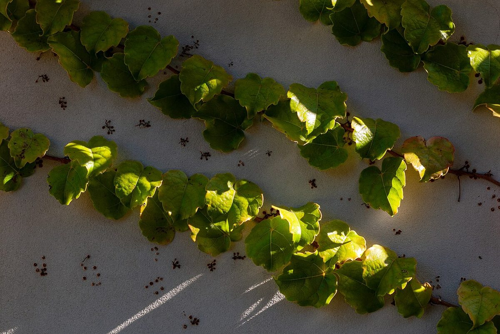

10マスの台紙
わかったことに、穴をあける。
お店について、いま確認できているのは所在地とInstagram、電話がないことだけ。確認できた項目だけ穴があいていて、残りは準備中のまま空けてあります。
- 1所在地確認済み
- 2Instagram確認済み
- 3電話(なし)確認済み
- 4営業時間準備中
- 5定休日準備中
- 6メニュー準備中
- 7価格準備中
- 8ご予約準備中
- 9駐車場準備中
- 10店内写真準備中
制作側の連想(お店の理念・由来とは無関係)
「時々」から、穴あきスタンプ台紙へ。
屋号に「うし」「やぎ」「時々」という言葉が並んでいるのを見て、制作側は「ときどき」という頻度の言葉を連想し、通うたびにひとつずつ穴があく台紙を思いつきました。屋号の由来は分かりません。お店の考え方や実際のサービスとは関係のない、制作側だけの連想です。
台紙のうら
ひと休みの景色(イメージ)
お店の写真ではなく、国外・撮影地不明のフリー素材です。提供内容を示すものではありません。



ご案内
確認できていること
| 所在地 | 〒325-0056 栃木県那須塩原市本町6-32 |
|---|---|
| 電話 | なし |
| 営業時間 | 準備中 |
| 定休日 | 準備中 |
| ご予約 | 準備中 |
| 駐車場 | 準備中 |
| SNS | Instagram @cheese_ushi.yagi |